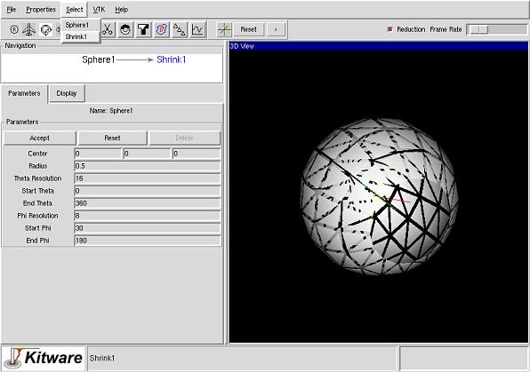
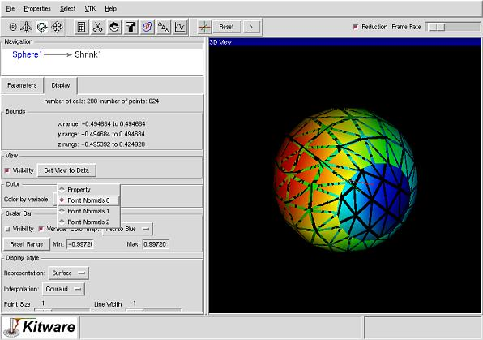

Prev
Up
Next
Step 8
Select Shrink1 from the Select menu.

Step 9
Select the Display tab from the source notebook and change the variable to be colored by to "Point Normals 0".

Prev
Up
Next
Last modified: Thu Oct 25 09:25:27 EDT 2001